About Huade
Machinery
Zhangjiagang Huade Machinery has manufactured and supplied plastic extrusion equipment since 2006.
Our equipment ranges from pipe, profile and sheet extrusion lines to granulation and recycling systems.
Browse equipment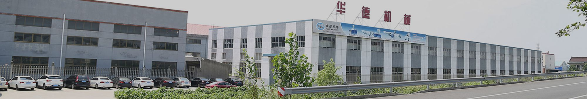
What we manufacture
- PVC pipe lines
- Ø 16–1200 mm
- HDPE pipe lines
- Ø 16–1600 mm
- PPR pipe lines
- Ø 16–160 mm
For PVC and wood-plastic composites (WPC), we supply lines for profiles, door and wall panels, and foam boards. Our sheet lines produce PVC marble sheets and roofing sheets.
We also build PVC/WPC granulation lines and equipment for recycling waste PP and PE film and bottles.
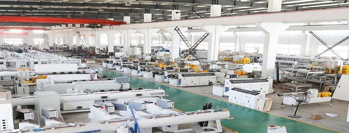
Our mission
We aim to earn our customers’ trust through open communication, fairly priced machinery, technical support and training for their operators.
Our engineers continually update our quality management practices and work to meet applicable quality and environmental requirements.
Company history
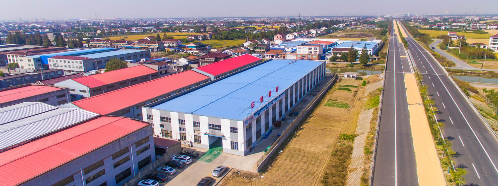
- 2008
- Five employees supplied plastic machinery spare parts from a 300 m² workshop.
- 2010
- With 15 people and 1,500 m² of workshop space, Huade began building pipe extrusion machines and supplying overseas orders through a domestic trading company.
- 2013
- Huade attended the K show in Germany, its first trade fair abroad.
- 2015
- New investment brought the workshop to 4,500 m² and the workforce to 80. By then, Huade reported exports to 80 countries and 243 complete lines in operation. Customer referrals brought in new buyers. Huade also established a subsidiary to develop washing and recycling equipment.
After-sales service
Huade provides maintenance advice and engineering support for equipment upgrades.
- Technical documentation
- Machine labels, layout drawings, electrical diagrams and operating manuals are in English. Printed documents ship with the machines.
- Inspection, installation and testing
- The buyer prepares the factory for installation and testing, including power, water, labour and lifting equipment.
- Warranty coverage
- Coverage starts when the equipment enters use in the buyer’s workshop. The stated periods are 12 months for mechanical parts and 6 months for electrical parts.
Trade exhibitions
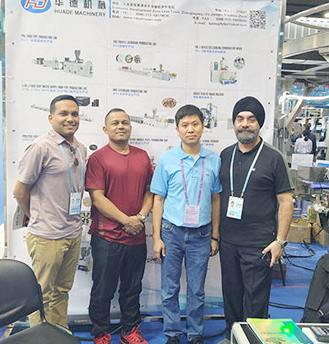
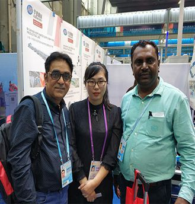
126th Canton Fair, Guangzhou
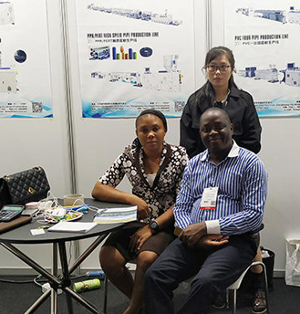
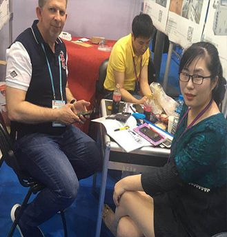
Thailand International Plastic Rubber Exhibition
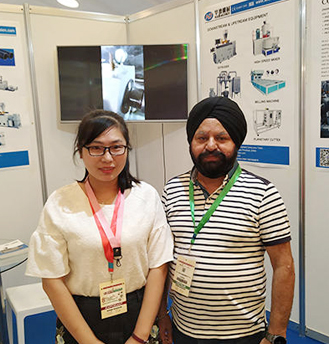
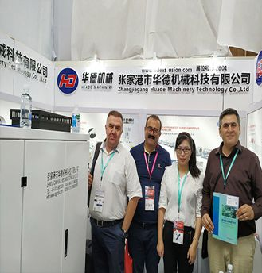
Plastexpo Morocco
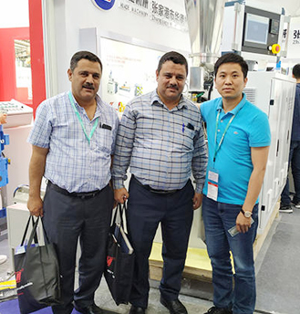
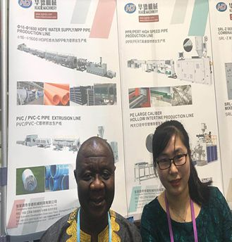